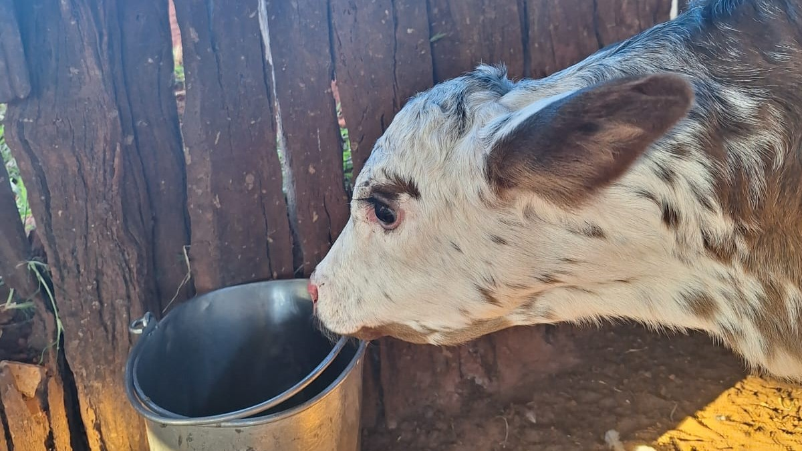

O sítio pertence aos meus avós, mas é o lugar de trabalho dos meus pais e o meu lugar favorito desse mundo! Onde eu vivi e vivo os melhores momentos da minha vida ao lado das pessoas que eu mais amo.
Saber maisSão feitas duas ordenhas ao dia, uma de manhã e outra a tarde. Todo o gado é tratado 3 vezes ao dia, estando presente no cardápio silo de cana-de-açúcar e cevada, exceto as leiteiras que além desse trato na hora da ordenha recebem ração e mais alguns suplementos (sal especial, lacto - aminoácido que ajuda na digestão...)
Saber mais
A maior parte do leite da ordenha da manhã é usado para a produção dos Produtos Driju, que incluem queijo fresco, requeijão caipira, doce de leite pastoso e em pedaço. Todos esses produtos são feitos pela minha mãe, sendo esses vendidos por encomenda em mercados, açougues, quitandas e para clientes particulares.
Saber mais